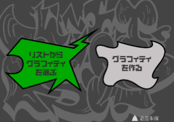

Jet Set Radio
中文汉化项目欢迎来到 Jet Set Radio (JSR) 中文汉化项目页面！本项目致力于为这款经典的世嘉 Dreamcast / PS2 街头涂鸦游戏提供高质量的简体中文本地化体验。让更多中文玩家能无障碍地沉浸在东京街头的自由滑行与涂鸦文化中。
汉化截图
Screenshots
汉化简介
Introduction
本次汉化基于 [说明基于哪个版本，如：美版 PS2] 版本进行制作。
汉化内容主要包括：
- 游戏主线剧情对话
- 游戏菜单、UI界面
- 教学提示、物品说明
我们的目标是尽可能还原原版游戏的风貌，同时提供流畅自然的中文表达。
补丁使用方法
Patching Instructions你需要准备：
- 一份纯净的 [Jet Set Radio (USA) PS2] 游戏镜像文件 (ISO)。请确保你的镜像是完好的，且与补丁要求的版本一致。
- 下载本页面提供的汉化补丁文件 (.zip)。
- 解压补丁文件，你会得到一个补丁文件 (例如 `.xdelta`) 和一个打补丁工具 (例如 `xdelta UI`)，或者你需要自行下载打补丁工具。
- 运行打补丁工具，选择原始游戏镜像文件和汉化补丁文件，然后指定输出路径生成新的、已汉化的游戏镜像。
- **重要：** 请务必备份你的原始游戏镜像，以防打补丁过程中出现意外。
打好补丁的镜像文件即可在模拟器或 [若适用] 实机上运行。
下载补丁
Download Patch [Download JSR Chinese Patch v1.0] (jsr_chinese_patch_v1.0.zip)
当前版本：v1.0 (发布日期: 2024-XX-XX)
文件大小：XX MB
MD5校验值：[提供校验值]
已知缺陷
Known Issues当前汉化版本可能存在以下问题，我们会在后续更新中尝试修复：
- 极少数文本可能因技术限制未能翻译。 
- 在特定场景下可能出现文字显示错位或超出文本框的情况。
- [其他已知问题...]
- 尚未在所有模拟器或实机配置上进行全面测试。
如果你在游戏中遇到任何未列出的问题，欢迎通过 [反馈渠道] 反馈。
汉化成员
Staff Credits感谢所有为这个项目付出努力的成员：
- 项目发起 & 技术： Ailyth99
- 翻译： [翻译成员A], [翻译成员B]
- 校对： [校对成员C]
- 美工/修图： [美工成员D]
- 测试： [测试成员E], [测试成员F]
- 特别感谢： [例如：字体作者, 技术支持等]
免责声明
Disclaimer本中文汉化补丁是基于对原版游戏的热爱而制作的免费、非官方作品，仅供学习和交流使用。
游戏本身的版权归原始开发商 [SEGA] 和发行商所有。本补丁并未获取官方授权。
请在拥有相应正版游戏的前提下使用本补丁。禁止将本补丁或打好补丁的游戏用于任何商业目的。
因使用本补丁可能造成的任何直接或间接损失，汉化组不承担任何责任。您需要自行承担使用风险。
补丁的最终解释权归汉化组成员所有。未经许可，请勿对本补丁进行二次修改、移植或发布。
汉化项目制作 / 网站维护
© 2024 Ailyth99 & JSR Hanhua Team